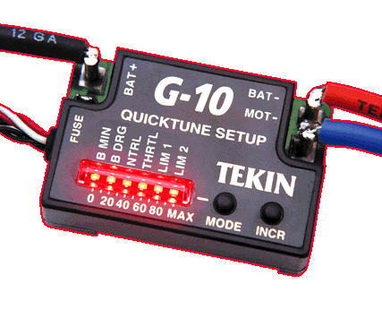

ELECTRONICS, INC. RACE GEAR

| R/C Racing Gear by TEKIN Electronics delivers long life and maximum performance with specialty features like CoolSwitch circuitry, Quicktune set-up, Vari Torque Current Limiter, and Power-Flex. All are built with effective overload protection. Sophisticated electronic micro-circuits and quality design pack the latest, best, race winning technology into all of our products.
All Tekin products are YK2 compliant.
|
©1996-9 Tekin Electronics Inc.